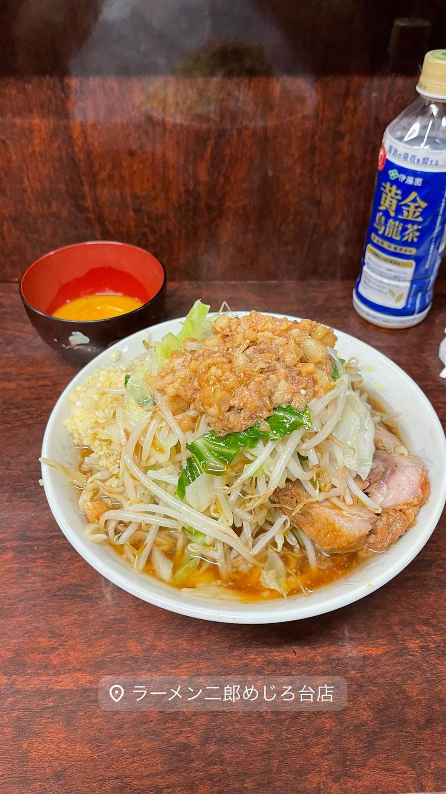

ラーメン二郎 荻窪店
桜台仕込みの乳化スープ、女性スタッフの「癒し系」二郎
ラーメン二郎 荻窪店
荻窪店は2002年開業のラーメン二郎「直系」店で、2014年頃の休業を経て2016年1月にラーメン二郎桜台店出身の店主のもとで再オープンした。桜台仕込みの乳化スープは豚骨と背脂が溶け合う重厚な味わいで、女性スタッフの接客から「癒し系二郎」とも呼ばれる。
TRIVIA
へえ、という話
- 2014年頃に一時閉店し、2016年に桜台店出身の店主が引き継いで再スタートした店
- 二郎系の中では珍しく女性スタッフの接客があり「癒し系」と呼ばれる
| 創業 | 初代2002年10月開業。現店主による営業は2016年1月17日リニューアルオープン |
|---|---|
| 系譜 | ラーメン二郎 桜台店出身の店主が2016年に継承した「直系」二郎の一つ。総本店は1968年創業 |
| 看板 | 小豚（豚多め）、乳化した濃厚な豚骨醤油スープの二郎系ラーメン |
| こだわり | 桜台仕込みの乳化スープは豚骨と背脂の旨味を溶け込ませた重厚な味わいが特徴。 |
| 予算 | 昼 ～¥999 夜 ～¥999 |
| 定休日 | 日曜 |
| 場所 | 荻窪駅 東京都杉並区荻窪4-33-1 |
| 注意 | 食券制。1回の食事時間が15分までと案内されている。女性スタッフが接客することがあり「癒し系二郎」と呼ばれることもある。行列店。 |
食べたもの：二郎系ラーメン
NEARBY
近い店・同じ系統の店
-
 ★
二郎系(直系) 生田
ラーメン二郎 生田駅前店
三田本店・立川・目黒などで修行した店主が出す一杯
昼 ～¥999 夜 ¥1,000～¥1,999
★
二郎系(直系) 生田
ラーメン二郎 生田駅前店
三田本店・立川・目黒などで修行した店主が出す一杯
昼 ～¥999 夜 ¥1,000～¥1,999
-

★1 二郎系(直系) めじろ台 ラーメン二郎 めじろ台店 2023年に一度閉店、二代目が継いで復活した非乳化スープ 昼 ～¥999 夜 ～¥999 -
 ★2
二郎系(直系) 伊勢佐木長者町駅
ラーメン二郎 横浜関内店
二郎の「汁なし」を早くから始めた発祥格の直系店
昼 ～¥999 夜 ～¥999
★2
二郎系(直系) 伊勢佐木長者町駅
ラーメン二郎 横浜関内店
二郎の「汁なし」を早くから始めた発祥格の直系店
昼 ～¥999 夜 ～¥999
-
 ★
煮干し・魚介 荻窪
there is ramen
開業1年でミシュランのビブグルマンを獲得した花びらチャーシュー
昼 ¥1,000～¥1,999 夜 ¥1,000～¥1,999
★
煮干し・魚介 荻窪
there is ramen
開業1年でミシュランのビブグルマンを獲得した花びらチャーシュー
昼 ¥1,000～¥1,999 夜 ¥1,000～¥1,999
-
 ★3
二郎系(直系) 松戸
ラーメン二郎 松戸駅前店
元は「ラーメンショップ」だった店が二郎に転換、三代続く味
昼 ～¥999 夜 ～¥999
★3
二郎系(直系) 松戸
ラーメン二郎 松戸駅前店
元は「ラーメンショップ」だった店が二郎に転換、三代続く味
昼 ～¥999 夜 ～¥999
-
 ★5
二郎系(直系) 元田中駅
ラーメン二郎 京都店
関西唯一の直系二郎、九条ねぎをのせられる一杯
昼 ～¥999 夜 ～¥999
★5
二郎系(直系) 元田中駅
ラーメン二郎 京都店
関西唯一の直系二郎、九条ねぎをのせられる一杯
昼 ～¥999 夜 ～¥999